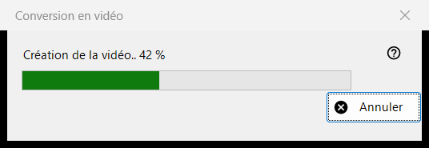
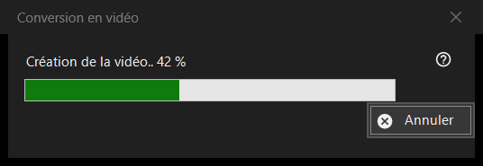

Conversion en vidéo
Objectif
La fenêtre de progression de Convertir en vidéo : elle transforme un GIF, un WebP ou un APNG animé en MP4, puis supprime l'original. Elle s'ouvre après que vous avez confirmé la conversion, reste au-dessus de la visionneuse jusqu'à la fin du travail, et n'a qu'un seul bouton, Annuler.


Dans cet ordre
- Affichez une image animée.
- Choisissez Convertir en vidéo.. dans le menu de l'image, ou appuyez sur le bouton Convertir en vidéo de la barre d'outils ; les deux n'existent que lorsqu'une animation est à l'écran, et il n'y a aucun raccourci clavier.
- Lisez la confirmation et appuyez sur Convertir.
- Si on vous propose de télécharger FFmpeg, répondez Oui.
- Suivez la barre, ou appuyez sur Annuler.
- La visionneuse ouvre le nouveau MP4.
Les éléments
Lancement de la conversion
La commande n'est proposée que pour les animations, jamais pour une image fixe ou une vidéo, et la visionneuse la refuse pour un conteneur protégé ou un endroit où rien ne peut être écrit à côté du fichier. La lecture s'arrête dès que le travail commence.
La confirmation
Elle indique en substance : l'original sera converti en nouveau MP4, et l'original est supprimé définitivement, sans passer par la Corbeille. Lorsque l'animation a de la transparence, elle ajoute : La transparence sera remplie de noir. Annuler est la réponse par défaut. La case Ne plus demander jusqu'à la fermeture du programme ne dure que jusqu'à la fermeture de la visionneuse ; elle n'est jamais enregistrée.
FFmpeg
La conversion utilise FFmpeg, qui ne fait pas partie du programme. S'il manque, on vous interroge une seule fois sur le téléchargement (la question indique la taille ; le fichier vient du site du projet, est enregistré localement et constitue un logiciel libre sous licence GPL). Répondre Non arrête tout ici et rien n'est créé ni supprimé.
La fenêtre de progression
Le titre indique Création de la vidéo.. avec un pourcentage, et la barre le suit. Lorsque la durée de l'animation est inconnue, la barre va simplement d'un côté à l'autre, sans nombre. Annuler, la touche Esc et la case de fermeture signifient la même chose : la fenêtre reste un instant, jusqu'à ce que l'encodeur se soit vraiment arrêté, puis se ferme, et la visionneuse signale Conversion annulée. La visionneuse n'est pas utilisable pendant ce temps.
Ce que vous obtenez
Un MP4 dans le même dossier, sous le même nom (un nombre entre parenthèses est ajouté si le nom est pris), à la cadence d'images de l'animation, entre 1 et 50 images par seconde. Il est écrit sous un nom temporaire puis renommé une fois prêt. L'original n'est supprimé qu'après que le MP4 existe sous son nom définitif et qu'on a vérifié qu'il contient toute l'animation. La ligne d'état indique Terminé et la visionneuse affiche la vidéo.
Quand quelque chose ne va pas
L'original reste, et la ligne d'état en donne la raison : Impossible de créer la vidéo, avec la cause ; la vidéo a été créée mais l'original n'a pas pu être supprimé ; ou la complétude de la vidéo n'a pas pu être vérifiée et l'original a été conservé. Un échec laisse l'original intact, supprime le fichier temporaire et écrit les détails dans le journal.